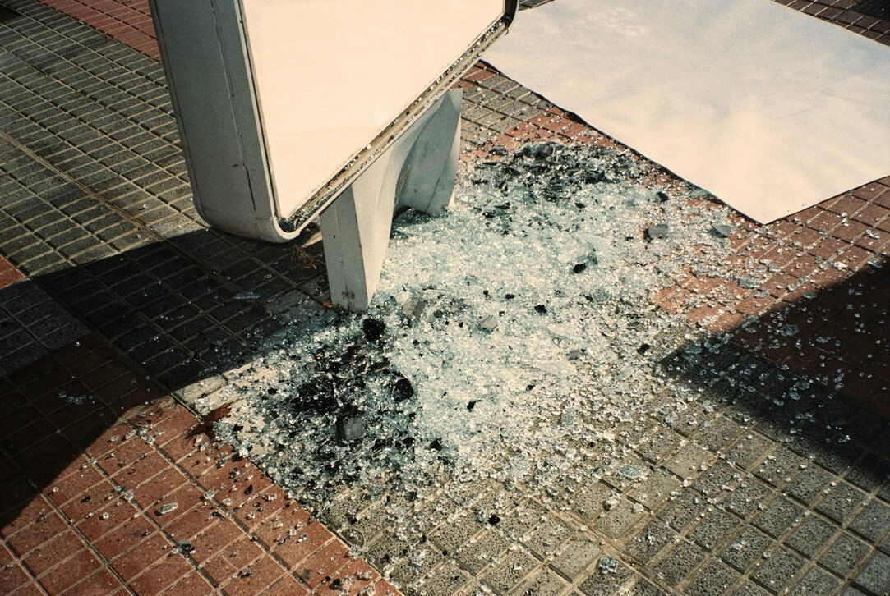
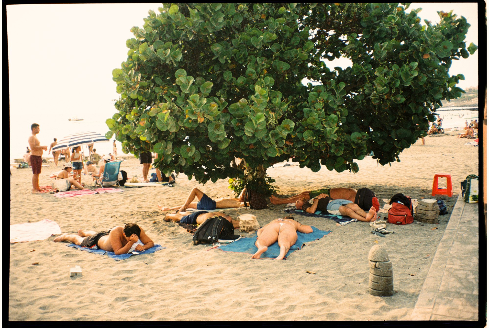
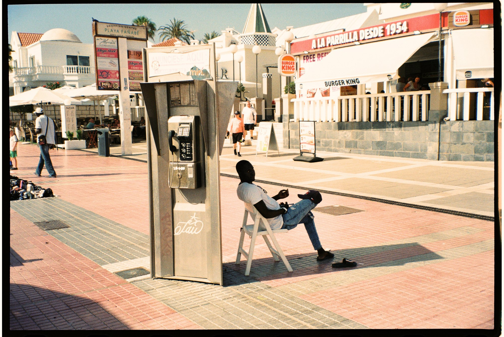
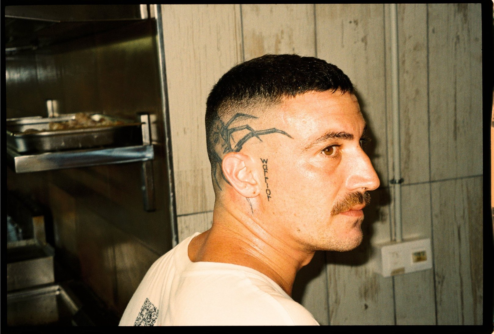
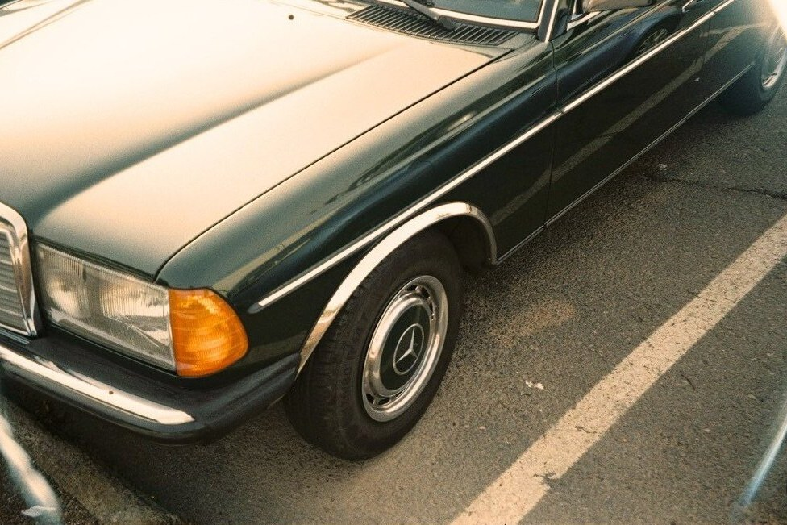
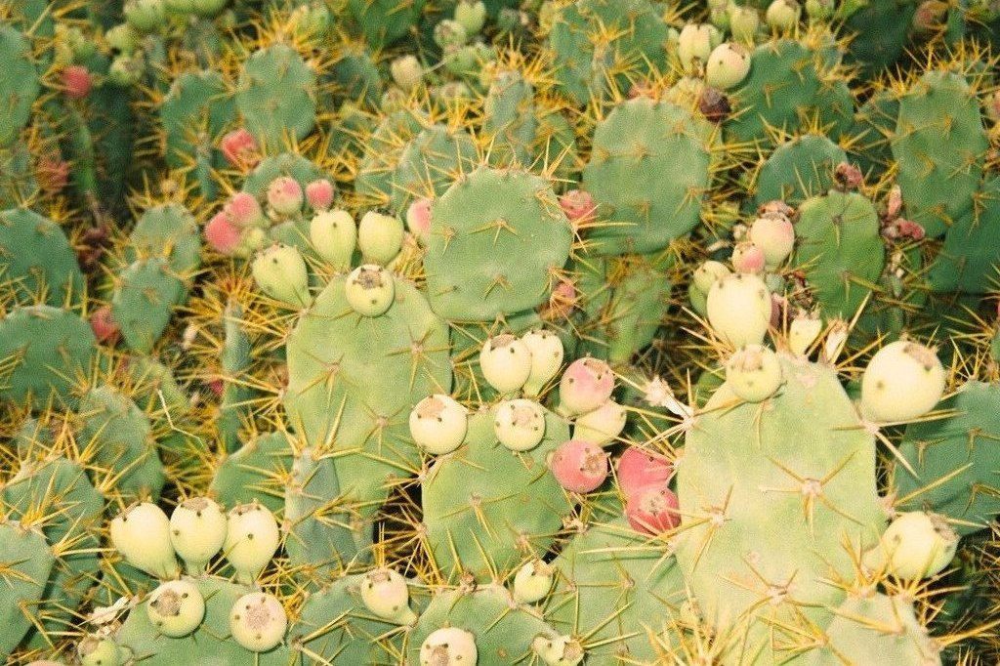
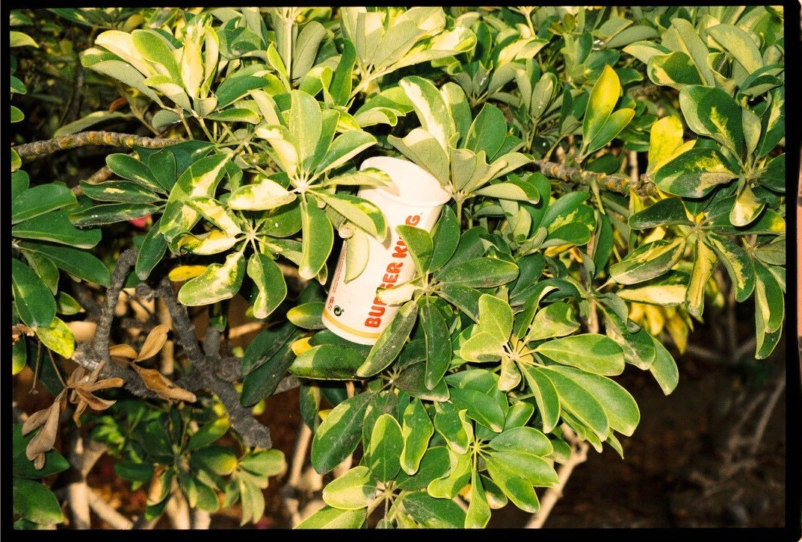
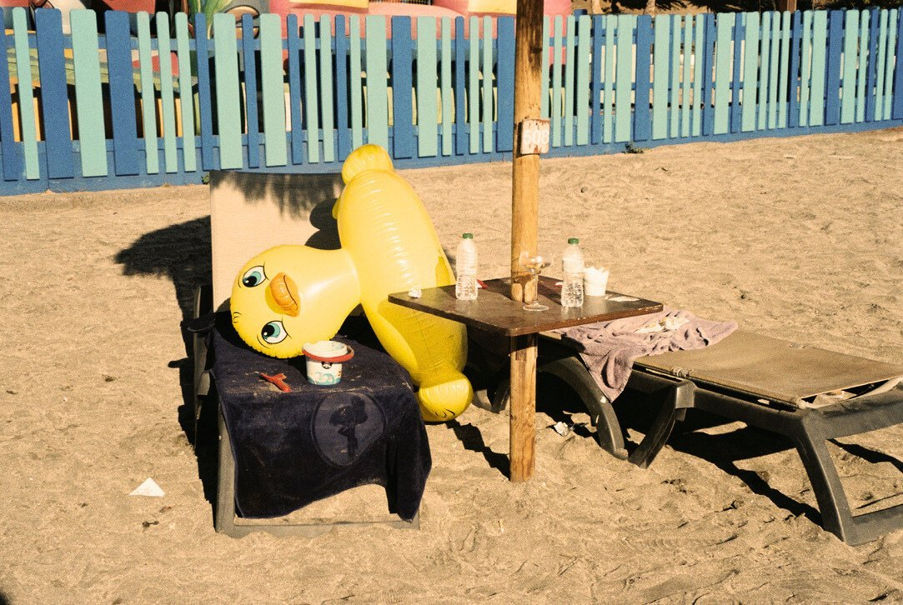

CALIMA
very small particles of dust, ash, clay and sand in suspension.

between 2022 and 2023 I spent six months making a television project in the Canary Islands.


in my free time I went out with a 35 mm compact camera to portray the most touristic part of the islands: Maspalomas, in Gran Canaria. Adeje, in Tenerife.


the calima, a natural phenomenon that covers the islands with sand from the Sahara, would appear for several days, tinting the landscape an unbreathable orange.


tourists and workers finally seemed to understand each other on the battlefield, thanks to this toxic heat that seeps through the fabric of your clothes and stings your eyes.


even at night, when temperatures settle, drought and sweat are the leitmotif for anyone who dares to live on the volcano.





the calima is trying to say something.




when the cloud of dust appears on the horizon, swallowing the yachts and blinding the hashish sellers on the Adeje promenade, remember: this is the moment,
get on your jet ski and leave the archipelago.
the calima will disappear after a few days.
by then, everything will have changed.